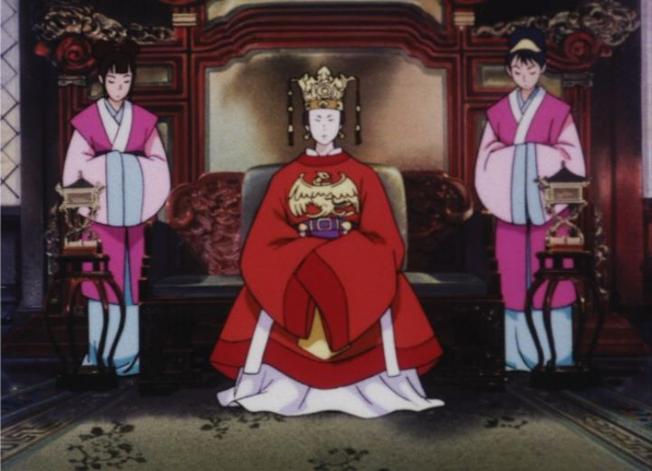

"Like The Clouds, Like The Wind" (also known as "Kumo Kaze") is a little-known 1990 anime film that wouldn't be released outside of Japan until Discotek Media released it in America a couple decades later. I admit it was a complete blind-buy for me; while the film seemed to have a good reputation, it seemed to be a movie targeted to young girls. From the title, to the premise, to the Bluray cover art of a young girl barefoot moping in a Japanese princess robe, I don't think anyone would disagree. Thankfully, we live in a new age where there is no such thing as "stories for girls" and "stories for boys." "Like The Clouds" even challenges these perceptions itself, being a surprisingly progressive film for 1990, even though a handful of plotpoints might still concern modern-day viewers.The film is set in ancient China (ignorant as I am, I only learned that it wasn't set in Japan after reading the Wikipedia page). The Emperor has died, and a new one is about to take his place. Secretly, one of the previous Emperor's wives (he had hundreds of them) schemes to have her own son gain the title, even if it means plotting to overthrow the new king. Meanwhile, the new Emperor must have a bride (or two or three... I suppose harems were a thing back then), so a kingdom-wide search is made to bring girls of all types to the castle. Ginga is the story's lead heroine, a country girl with no education or manners, eager to apply to be the Emperor's wife, not just for the education (dialogue mentions that girls didn't go to school during this period), but for the freedom to eat and sleep all day! Despite always speaking her mind, Ginga seems to impress everyone, like a diamond in the rough.Fairly quickly, the film's production impressed me. That soundtrack is unmistakable... was it written by Joe Hisashi? The story and direction... were Isao Takahata and Hayao Miyazaki involved? Nope, none of them were involved. I'm not the only person who would think "Like The Clouds" came from Studio Ghibli: due to early fan-translation errors and without an official reference release, fans had incorrectly assumed the movie to be a Ghibli production for years. The character designs by Katsuya Kondo, a designer who really did work with Ghilbi, are the only major ties. Regardless, this speaks highly of the movie's quality: very few anime could be compared with the "Walt Disney Studios of Japan." Characters and background art are a bit simplistic but pleasant, and animation is fluidly detailed and dynamic. The soundtrack is lovely (although it only stands out at the beginning and end), and the Japanese-only acting holds up well. Ginga's journey through the story is full of humor, thanks to her personality and the reactions of those around her, from palace nobles to servants to the other princesses'-to-be. There's a surprising amount of physical humor too. If the premise seems at all boring, don't worry: both the secret coup and the growing public uprising provides plenty of action, even more than you might find in a typical Ghibli movie, leading to a final battle where the Emperor's many new wives use rifles and cannons to defend the castle themselves! The interesting elements of the story involve the philosophy the film portrays about the role of women and men. Some of these are positive for modern audiences: the new Emperor is handsome, but elegant and in dress that made Ginga assume he was a woman (further allowing him to hide from public enemies that don't know his face). The new Emperor's older sister also hides amongst the new wives as they train and educate for their roles, and is a quick and efficient bodyguard that puts even the best warriors in the palace to shame. There's a brief acknowledgement that some people are gay, something that no family film, even today, would dare mention. However, women were expected to behave a certain way in this period of time. They didn't receive an education like men did. They were expected to be silent and obidient, to marry and have children. Even in the final battle, the army of men attacking the castle don't hide their excitement to pillage a palace full of beautiful women, with the subtle-enough intention to rape them like treasure rather than people. "Like The Clouds" has trouble in both subverting and following these old expectations, both encouraging them to be proud to be women ("only women can bear children"), and to overcome it (young though she may be, the film's conclusion involves Ginga having a child after all). Sure, most family movies from this period weren't so forward thinking, but they didn't highlight the issue so explicitly either: if you want to bring up complicated questions, you won't satisfy without complimenting it with a complete solution. Frankly, I'm not a woman, so it's not my place to say how women would feel about the movie. If you aren't too serious on the topic, the movie should be plenty of fun for any audience, young and old, male or female. And its characters and events are supposedly loosely based on real history, so it's educational too! If you haven't seen it yet, I highly recommend seeking out "Like The Clouds, Like The Wind." It's not perfect or even exceptional, but is a great example of a diamond in the rough. Teachers might also find it useful in a high-school class for Asian history, a great starting point for discussion of the historical figures that inspired the story, of how to write a fictional story based on real events, or of how roles of gender once were in the past, present, future, or how they should be, highlighting how complicated the topic can be.
- "Ani" More reviews can be found at : https://2danicritic.github.io/ Previous review: review_Lesbian_Space_Princess Next review: review_Lilo_&_Stitch